このチュートリアルについて
1枚の写真から3Dモデルを作成し、最終的にArchicadで利用できる3DSデータへ変換します。 作業には「Tencent Hunyuan 3D」と「Otoblend」を使用します。
Part 1 — 3Dモデルを作成する
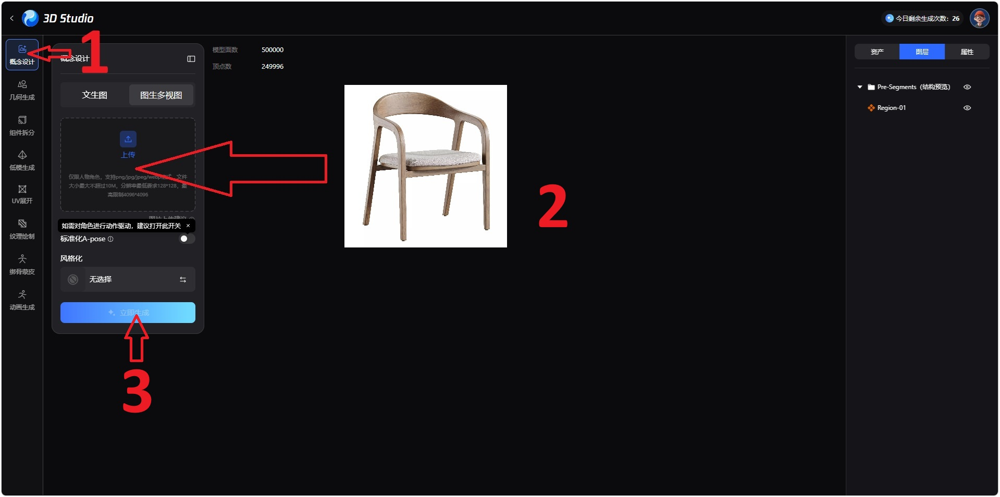
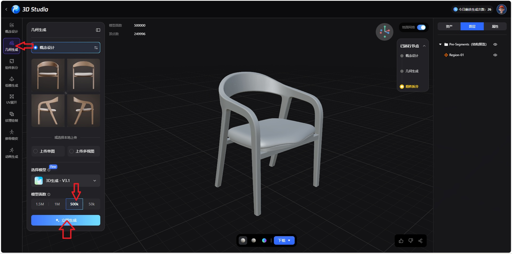
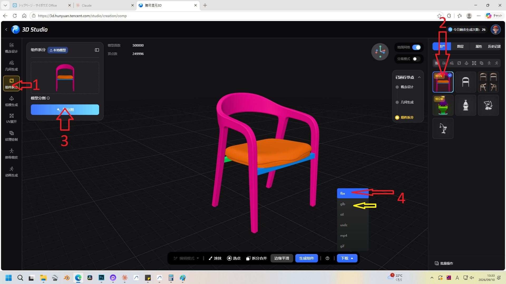
FBX または GLB をダウンロード
3Dモデルの生成が完了したら、.FBX または .GLB 形式で
ファイルをダウンロードします。
Otoblendを起動する
次にOtoblendを開き、先ほどダウンロードしたFBXファイルを選択します。
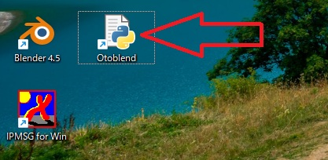
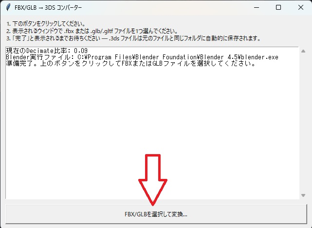
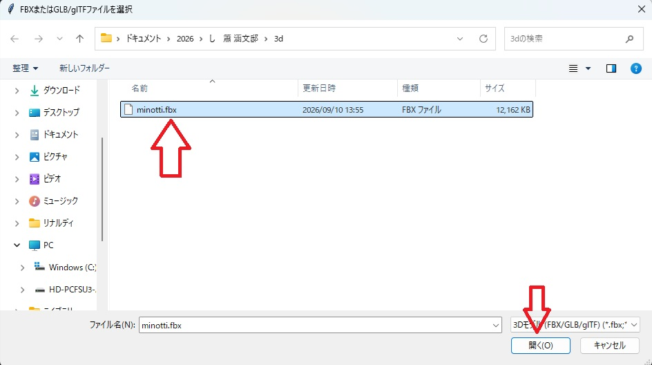
処理が完了するまで待つ
変換処理には時間がかかる場合があります。処理が完了するまでそのまま待ちます。
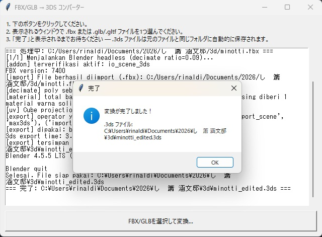
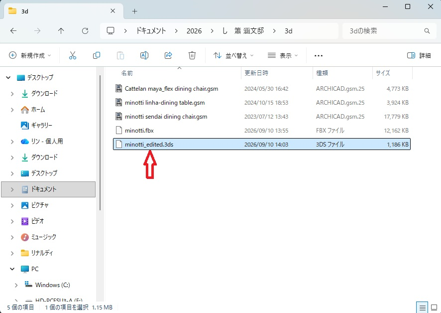
3DSファイルをArchicadへ
変換が完了すると、3DSファイルをArchicadへインポートして使用できます。
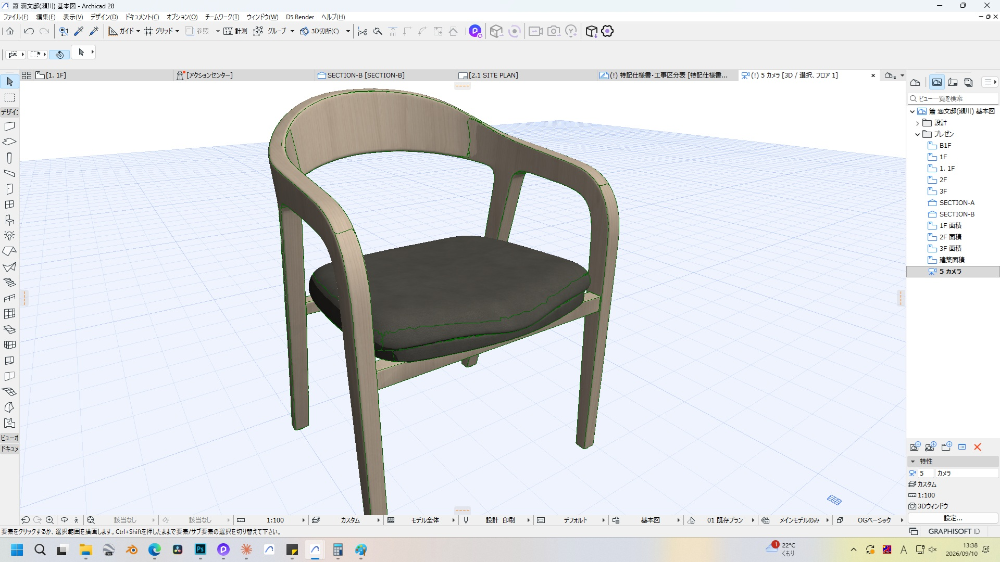
Part 2 — Otoblendのインストールと設定
初めて使用する場合は、以下の設定を行ってください。
Blenderのインストールを確認
まずBlenderがPCにインストールされていることを確認します。 3DS形式のインポート／エクスポート機能が有効になっているかも確認してください。
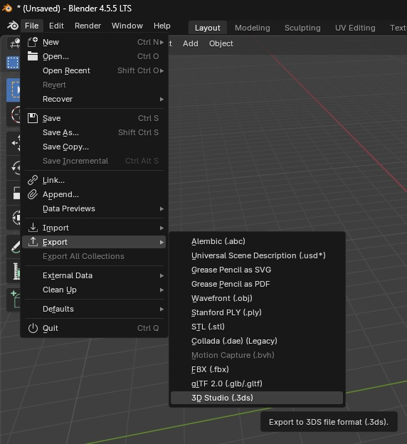
Otoblendのファイルを準備
Otoblend 2.zip をコピーし、すべてのファイルを1つのフォルダに展開します。
次に python-manager-26.3.msix をインストールします。
Blenderのフォルダパスをコピー
Blenderのアイコンを右クリックして「プロパティ」を開きます。 そこでBlenderがインストールされているフォルダの場所を確認し、そのパスをコピーします。
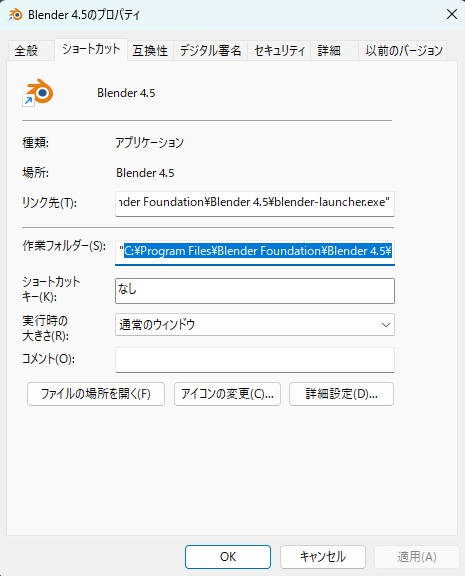
config.pyを編集
config.py を右クリックし、「メモ帳」などのテキストエディターで開きます。
赤線で示されている部分に、先ほどコピーしたBlenderのフォルダパスを貼り付けます。
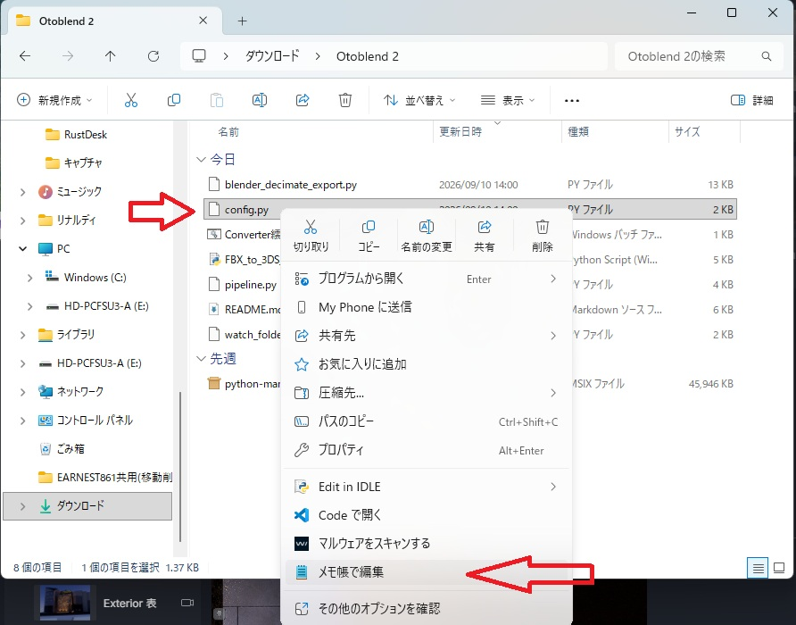
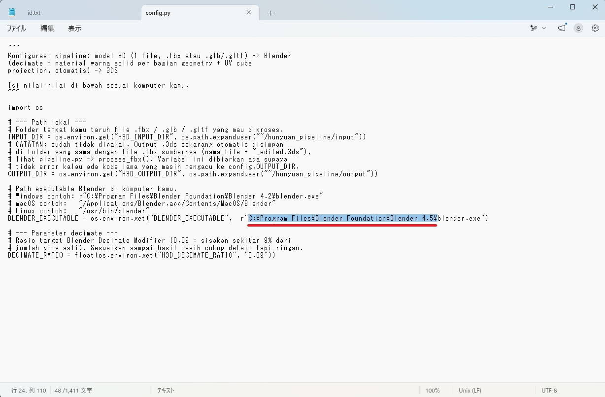
Otoblendを起動する
すべての設定が完了したら、
FBX_to_3DS_Converter_JP.pyw をダブルクリックしてください。
スクリプトが自動的にPC内のBlenderを起動し、FBXから3DSへの変換を行います。
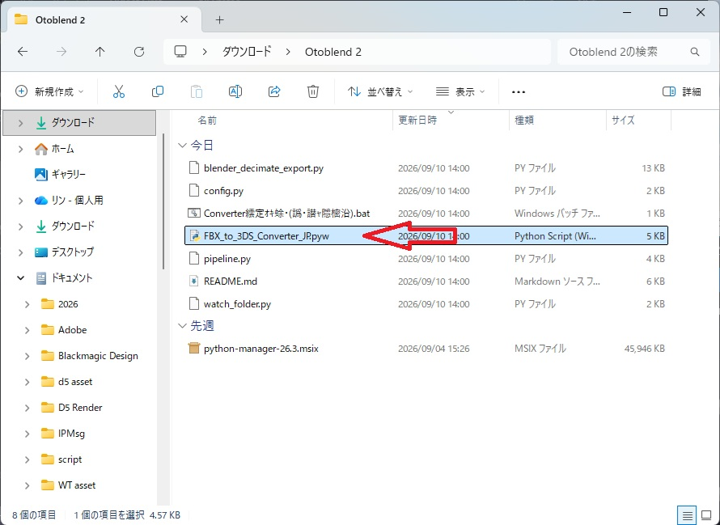
完成
最初の設定が完了すれば、次回からは
FBX_to_3DS_Converter_JP.pyw を起動するだけで変換作業を行えます。
最後までご覧いただき、ありがとうございました。少しでもお役に立てれば幸いです。